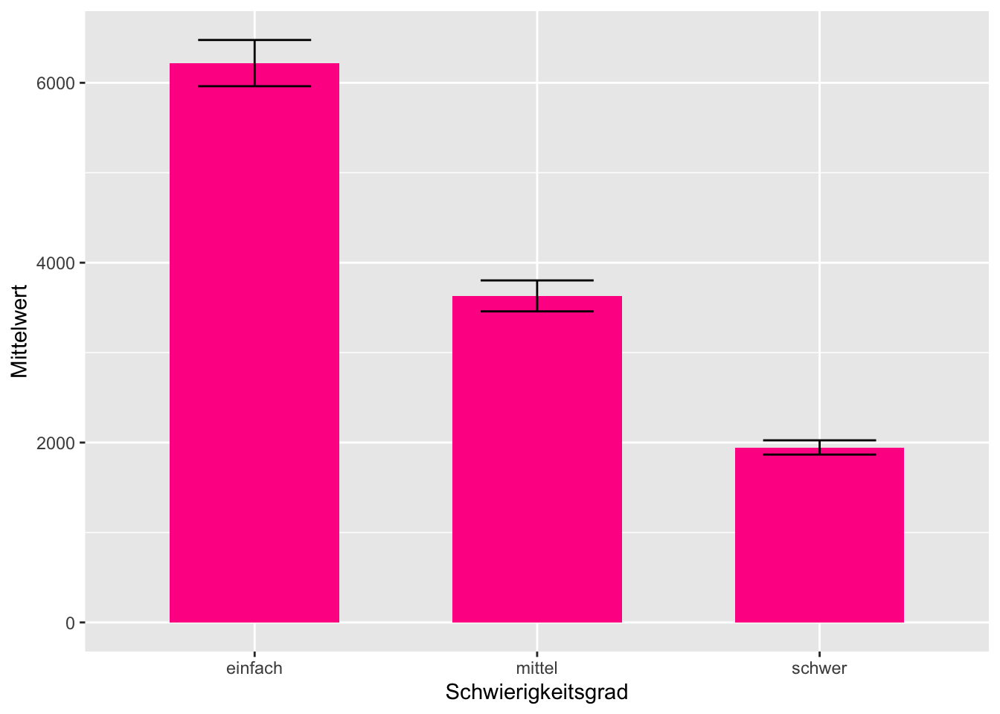

Kapitel 12 Varianzanalyse
Die Erarbeitung dieses Kapitels erfolgte auf Basis eines Skripts, welches Daniel Possler 2021 für die Veranstaltung SDA2 erstellt hat. Dieser wiederum nutzte Vorarbeiten von Jule Scheper, Sophie Bruns und Anna Freytag.
Im letzten Kapitel haben wir mit dem T-Test ein Verfahren kennengelernt, mit dem wir Unterschiedshypothesen prüfen können, indem die Mittelwerte von zwei Gruppen verglichen werden. Was aber, wenn wir nicht zwei sondern mehr Gruppen haben? Hier kommt die Varianzanalyse ins Spiel. Mit der Varianzanalyse (englisch ANOVA = analysis of variance) ist dies möglich. Genau wie der im letzten Kapitel angewendete T-Test hat die abhängige Variable der Varianzanalyse metrisches Datenniveau und die unabhängige mindestens nominales1. Ein Unterschied ist, dass die unabhängige Variable mehr als zwei Ausprägungen haben darf. – Sie muss also nicht zwingend dichotom sein. Ein anderer Unterschied ist, dass als Prüfgröße nicht die T-Verteilung verwendet wird, sondern die von Ronald a. Fisher entwickelte F-Verteilung. Die Prüfgröße heißt deshalb F.
Mit der Varianzanalyse können auch komplexe experimentelle Designs ausgewertet werden, bei denen es z. B. mehr als ein Einflussfaktor berücksichtigt wird. Nimmt man nur einen Einflussfaktor auf, handelt es sich um eine einfaktorielle Varianzanalyse (One-way Anova), bei zwei Faktoren spricht man von einer zweifaktoriellen Varianzanalyse (Two-way Anova) und bei noch mehr Faktoren von einer mehrfaktoriellen Varianzanalyse.
12.1 Datenbeispiel
Die Daten für dieses Kapitel liefert die BA-Arbeit von Carsten Reichelt (2019). Vielen Dank an dieser Stelle! Carsten Reichelt hat in seiner BA-Arbeit untersucht, ob der Schwierigkeitsgrad eines Videospiels eine Rolle für die Performance und das Erleben von Unterhaltung der Spieler:innen spielt. Um diese Frage zu klären hat er ein Online-Experiment designed in dem N = 248 nutzten Proband:innen vier Minuten lang das Spiel Pac-Man spielen mussten (= Stimulus). Der Stimulus wurde dabei über die drei Schwierigkeitsgrade “einfach” (n = 79), “mittel” (n = 90) und schwer (n = 79) variiert. Die Gruppenzugehörigkeit bildet also die zentrale unabhängige Variable und sie ist dreistufig (einfach, mittel oder schwer). Nach dem Spielen füllten die Proband:innen einen Online-Fragebogen aus, in dem verschiedene weitere, abhängige und unabhängige Variablen erhoben wurden. Außerdem wurde der Highsore, den die Proband:innen erzielten erfasst.
12.2 Prerequisits
Zunächst benötigen wir natürlich verschiedene Pakete zur Durchfühung der Varianzanalyse:
library(tidyverse) # für Grafiken und die Pipe
library(janitor) # für Häufigkeitsauszählungen
library(rstatix) # für den Levene-Test
library(effectsize)# für Eta-Quadrat
library(afex) # zur Berechnung der mehrfaktoriellen AnovaDie Die Daten der Abschlussarbeit von Herrn Reichelt liegen im SPSS-Format .sav. vor. Sie können über das Paket haven geladen werden. Da wir die unabhängigen Variablen für die Varianzanalyse in R als Faktoren benötigen, wandeln wir diese gleich im Anschluss an den Ladevorgang direkt in das benötigte Format um.
df <- haven::read_sav("data/BA–Carsten Reichelt.sav", user_na = FALSE) %>%
mutate(Schwierigkeitsgrad = factor(Schwierigkeitsgrad,
labels = c("einfach", "mittel", "schwer"),
ordered = TRUE),
Wettkampfpraeferenz = factor( v_12_rec,
labels = c("geringe Wettkampfpräferenz", "hohe Wettkampfpräferenz"),
ordered = TRUE)) %>%
select(lfdn, Schwierigkeitsgrad, Highscore, Wettkampfpraeferenz)
df## # A tibble: 248 x 4
## lfdn Schwierigkeitsgrad Highscore Wettkampfpraeferenz
## <dbl> <ord> <dbl> <ord>
## 1 91 mittel 1950 hohe Wettkampfpräferenz
## 2 92 einfach 3890 geringe Wettkampfpräferenz
## 3 93 einfach 5200 hohe Wettkampfpräferenz
## 4 98 mittel 3930 geringe Wettkampfpräferenz
## 5 104 schwer 1660 geringe Wettkampfpräferenz
## 6 106 mittel 3280 hohe Wettkampfpräferenz
## 7 113 einfach 9000 hohe Wettkampfpräferenz
## 8 114 einfach 7920 hohe Wettkampfpräferenz
## 9 123 mittel 4800 geringe Wettkampfpräferenz
## 10 135 einfach 5520 geringe Wettkampfpräferenz
## # … with 238 more rows12.3 Einfaktorielle Varianzanalyse
Bevor wir uns an komplexere Designs wagen, testen wir ersteinmal eine ganz basale Hypothese, die quasi Voraussetzung für die weiteren Analysen in der BA-Arbeit von Herrn Reichelt ist. Im Experiment wird davon ausgagangen, dass die Gruppenzuteilung und der in der jeweiligen Gruppe angewendete Stimulus ursächlich verantwortlich ist für die Varianz zwischen den Gruppen.
Die Hypothese, die zuerst betrachtet wird, ist quasi der Test, ob die Variation durch den Stimulus funktioniert hat (Treatmentcheck). Es sollte so sein, dass der Schwierigkeitsgrad den High-Score beeinflusst, und zwar in “gegenläufiger” (anti-proportionaler) Richtung. Salopp gesagt: Je schwerer das Spiel, desto geringer der Highscore. Anders formuliert könnte die Hypothese so lauten:
H1: Der Schwierigkeitsgrad beeinflusst den erzielten Highscore negativ.
12.3.1 Deskriptive Analyse
Bevor es an die tatsächliche Prüfung der aufgestellten Hypothese geht, empfiehlt es sie wie immer, sich mit den Mitteln der deskriptiven Statistik und mit Grafiken einen Überblick über die Datenlage zu verschaffen.
Schauen wir uns zunächst die Verteilung der abhängigen Variablen an. Da es sich um eine nominale Variable handelt, interessiert hier vor allem die Häufigkeitsverteilung (und nicht etwa Lage und Streuungsmaße). Zur Anzeige der Häufigkeitsberteilung gibt es viele Wege, etwa table()oder summary(). Damit ich hier auch die realtiven Häufigkeiten erhalte, nutze ich tabyl()aus dem janitor-Paket.
df %>%
janitor::tabyl(Schwierigkeitsgrad) %>%
adorn_rounding(2) %>%
adorn_totals() ## Schwierigkeitsgrad n percent
## einfach 79 0.32
## mittel 90 0.36
## schwer 79 0.32
## Total 248 1.00Wir können an dieser Verteilung sehen, dass die Gruppen alle ausreichend groß und ungefähr gleich besetzt sind. Lediglich in Gruppe zwei sind ein paar mehr Versuchspersonen gelandet. Das stört nicht weiter.
Nun schauen wir uns die abhängige Variable, also den Schwierigeitsgrad an. Es ist eine Voraussetzung für die sinnhafte Anwendung der Varianzanalyse, dass die Verteilung dieser Variablen tatsächlich auch im Sample variiert. – Das die Proband:innen also unterschiedliche Scores erzielt haben und nicht etwa alle den gleichen oder einen ähnlichen. Außerdem ist es interessant zu wissen, auf welchem Niveau die Proband:innen Packman spielen. Lassen wir uns also die interessierenden Kennzahlen ausgeben:
summary(df$Highscore)## Min. 1st Qu. Median Mean 3rd Qu. Max.
## 30 1870 3305 3918 5658 11130sd(df$Highscore)## [1] 2394.036Das sieht prima aus! Der Highscore schwankt zwischen einem Minimum von 30 und einem Maximum von 1.113^{4}. Im Mittel haben die Proband:innen M = 3918 Punkte erzielt, wobei die Verteilung rechtsschief zu sein scheint, da der Medien etwas kleiner als das arithmetische Mittel ist. Auch die Standardabweichung (= Wurzel der Varianz) ist mit 2394.0361856 angemessen hoch. Man kann also sagen, dass der Highscore variiert.
Nützlich ist an dieser Stelle auch ein Histogramm, da man darüber die Verteilung der aV noch detaillierter veranschaulichen kann:
df %>%
ggplot(mapping = aes(x = Highscore)) +
geom_histogram(bins = 15)
Es zeigt tatsächlich eine rechtsschiefe Verteilung, die eine deutliche Spitze im unteren Viertel der Bandbreite an Highscores aufweist.
Mit Hilfe eines Boxplots können wir außerdem die Lage der Mittelwerte und die Variation der Highscores in den einzelnen Gruppen überblicksartig beurteilen. Das ist dann schon ein erster Vorgeschmack auf das zu erwartende Ergebnis des folgenden Hypothesentests – ohne das jedoch geprüft wird, ob die Mittelwerte tatsächlich signifikant von einander abweichen. Zusätzlich lasse ich über stat_summary()noch die arithmetischen Mittel in schwarz in die Grafik einzeichnen, da der Boxplot lediglich die Mediane darstellt.
df %>%
ggplot(mapping = aes(x = Schwierigkeitsgrad,
y = Highscore,
color = Schwierigkeitsgrad)) +
geom_boxplot(width=0.5) +
stat_summary(fun=mean, shape = 23, color = "black")Tatsächlich, die Mittelwerte in den Gruppen reihen sich genau wie erwartet: Die Personen in der Gruppe “einfach” haben den höchsten Highscore erzielt, die in der Gruppe “schwer” den niedrigsten. Das ist schon einmal vielversprechend für den Hypothesentest, denn diese Reihung hatten wir ja in der Hypothese prognostiziert. Würde sie hier nicht wie erwartet auftreten, könnten wir den Hypothesentest gleich abbrechen.
Noch etwas wird in dem Boxplot ersichtlich: Die Bandbreite an Highscores ist in der Gruppe “einfach” am höchsten: hier liegt sowohl der Minimalwert, als auch der Maximalwert – und zwar über alle Gruppen hinweg! Das sieht man am der senkrechten violetten Linie, die länger ist, als die Linien der anderen beiden Gruppen. Auch die Quartielgrenzen sind recht weit auseinander (das sieht man an der “Box”). In dieser Gruppe scheint also die Streuung relativ groß zu sein. In der gelben Gruppe “schwierig” ist sie hingegen gering. Das erkannt man an der niedriegen “Box” und daran, dass alle Fälle, die außerhalb der Box liegen, noch nicht einmal in Form einer Linie, sondern als Punkte (=Einzelfälle/Ausreißer) dargestellt werden. Die Spieler:innen aus der Gruppe "schwer liegen also viel dichter bei einander als die Spieler:innen der anderen Gruppen.
Der Boxplot prognostiziert folglich eine stark unterschiedliche Varianz oder anders ausgedrückt: fehlende Varianzhomogenität. Aus dem letzten Kapitel T-Test wissen Sie bereits, dass dies ein Problem sein kann, denn (annähernd) gleiche Varianzen sind eine Anwendungsvoraussetzung, auch für die Varianzanalyse2. Hier kommen wieder der Levene-Test und ein korrigierendes Verfahren ins Spiel. Bevor wir also loslegen können mit der eigentlichen Anova schieben wir den Levene-Test ein um sicherzugehen ob die Anwendungsvoraussetzung Varianzhomogenität erfüllt ist oder nicht.
12.3.2 Levene-Test
Der Levene-Test prüft – wie im letzten Kapitel beschreiben – ob sich die Varianz in den einzelnen Gruppen unterscheidet (was schlecht wäre) oder nicht (dann wäre die Anwendungsvoraussetzung erfüllt). Bevor wir den Test durchführen, lasse ich mir hier einmal arithmetisches Mittel und die Standardabweichung als standardisiertes Maß der Varianz ausgeben:
df %>%
group_by(Schwierigkeitsgrad) %>%
summarise(M = round(mean(Highscore), 0), SD = round(sd(Highscore), 0)) ## # A tibble: 3 x 3
## Schwierigkeitsgrad M SD
## <ord> <dbl> <dbl>
## 1 einfach 6219 2284
## 2 mittel 3631 1632
## 3 schwer 1946 704Das sieht tatsächlich nicht so toll aus. Die Standardabweichung ist in der Gruppe “einfach” mit SD = 2284 tatsächlich deutlich höher als in der Gruppe “schwer” mit SD = rdf %>% filter(Schwierigkeitsgrad == "schwer") %>% summarise(sd(Highscore)) %>% round(0).
Wir sind vorgewarnt, jetzt wollen wir es genau wissen. Hier kommt der Levene-Test:
df %>%
levene_test(Highscore ~ Schwierigkeitsgrad)## # A tibble: 1 x 4
## df1 df2 statistic p
## <int> <int> <dbl> <dbl>
## 1 2 245 42.8 1.17e-16Wie erwartet zweigt der Levene-Test mit p < .001 ein signifikantes Ergebnis. Es ist also von Varianzheterogenität auszugehen und wir benötigen eine Korrektur der Prüfgröße F.
Funfact
Der Prüfwert des Levene-Tests ist auch ein F-Wert, genau wie der Testwert, der beider Varianzanalyse verwendet wird. Unterschied ist: Bei Levene werden die Varianzen der Gruppen verglichen, bei der Varianzanalyse arithmetische Mittel.
12.3.3 Durchführung der Varianzanalyse
Nun wissen wir schon eine ganze Menge: Wir haben gesehen, dass sich die mittleren Highscores je nach Schwierigkeitsgrad deutlich unterschieden. Und wir wissen, dass wegen der Varianzhomogenität ein korrigierter Test angewendet werden sollte. Als nächstes prüfen wir die Hypothese mit einem Signifikanztest. Erreicht die Profgröße F einen gewissen Wert sinkt der p-Wert unter die Grenze von p < .05 und man würde in dem experimentellen Setting der BA-Arbeit von Herrn Reichelt davon ausgehen, dass der Schwierigkeitsgrad tatsächlich ursächlich für den erzielten Highscore ist (was ja eine völlig plausible Annahme ist).
Die Standard-Funktion aus base-R zur Berechnung von Varianzanalysen ist aov(). Die Funktion kann jedoch keine Korrektur bei Varianzheterogenität vornehmen, weshalb man lieber auf die Funktion oneway.test(), ebenfalls aus base-R zurückgreifen sollte, die dies ermöglicht. Diese Funktion benötigt zwei Argumente. Das dritte hier angegebene Argument ist optional, es sollte dennoch angegeben werden, damit der mögliche Einsatz der Korrektur bewusst und explizit geschieht. Hier die Argumente von oneway.test():
Eine Formel
formula, die wie folgt aufgebaut ist:abhängige Variable ~ unabhängige Variable(genau wie bei der Regression). Die Tilde~bedeutet soviel wie “wird beeinflusst durch.”Ein Datenobjekt
datain dem die Variablen und Messwerte zu finden sind, also unser Datensatz.Mit dem Argument
var.equallässt sich ein korrigierter Test anfordern. Es steht standardmäßig aufFALSE, so dass nicht von Varianzhomogenität ausgegangen wird und eine s.g. Welch-Korrektur durchgeführt wird. MAn kann es aber auch aufTRUEsetzen, wenn der Levene-Test mal auf Varianzhomogenität hinweisen sollte.
Der Output des erzeugten Modells lässt sich mit summary() ausgeben. Mit tidy() aus dem broom()-Paket erhält man allerdings eine hübschere Tabelle:
my_model <- oneway.test(formula = Highscore ~ Schwierigkeitsgrad,
data = df,
var.equal = FALSE)
broom::tidy(my_model)## # A tibble: 1 x 5
## num.df den.df statistic p.value method
## <dbl> <dbl> <dbl> <dbl> <chr>
## 1 2 136. 150. 3.99e-35 One-way analysis of means (not assuming equa…Ah sehr schön, ausgegeben werden die Freiheitsgrade (df), der F-Wert (statistic) und der zugehörige, sehr kleine p-Wert (p.value). In der letzten Spalte wird noch einmal die verwendete Methode angeführt (One-way Anova) und in Klammern steht auch, dass keine Varianzhomogenität angenommen wurde, wie gewünscht.
12.3.4 Effektstärke
Als Maß für die Stärke des beobachteten Effekts dient bei der Varianzanalyse \(\eta\)2 (Eta-Quadrat). Es berechnet sich aus dem Verhältnis der erklärten Varianz (Quadratsummen zwischen den Gruppen) und der Gesamtvariation. Man kann es mit dem Befehl eta_squared() aus dem effectsize-Paket ausgeben. Um ein Gesamt-Eta (und kein parteilles) zu erhalten sollte man die Option partial auf FALSE setzen und das Konfidenzintervall auf die für uns üblichen 95% (Argument ci = 95):
effectsize::eta_squared(my_model,
partial = FALSE,
ci = 0.95) ## Eta2 | 95% CI
## -------------------
## 0.69 | [0.61, 0.75]Achtung, identische Funktionsnamen
Eine genau gleich benannte Funktion eta_squared() gibt es auch im Paket rstatix, das ich für den Levene-Test geladen habe. Diese Funktion funktioniert aber nur mit über aov() erzeugten Objekten. Es ist deshalb unter Umständen wichtig explizit zu machen, dass hier die eta_squared()-Funktion aus dem Paket effectsize verwendet werden soll.
Zusammenfassend lässt sich sagen, dass die bisherigen Ergebnisse für die H1 sprechen: Der F-Wert ist mit p < .001 signifikant und \(\eta\)2 = 0.69 steht für einen starken Zusammenhang. Worüber wir jedoch noch keine Aussage machen können ist, ob sich wirklich alle Gruppen jeweils signifikant von einander unterschieden. Dazu werden Posthoc-Test benötigt.
12.3.5 Posthoc-Test
Der F-Wert repräsentiert die die kombinierte Signifikanz aller Parameter in der Formel. Es ist ein “Omnibus-Test”: Alle Mitelwertunterschiede dürfen “einsteigen” und werden gleichzeitig getestet. In unserem Fall sind das drei: (1) der Test zwischen “einfach” und “mittel,” der Test zwischen “einfach” und “schwer” sowie (3) der Test zwischen “mittel” und “schwer.” Ist der F-Wert signifikant bedeutet das, dass irgendetwas in dem getesten Modell signifikant ist. Wir wissen aber nicht genau, ob und welcher der drei Mittelwertvergleiche. Sogenannte Poshoc-Tests weisen die Signifikanzen für die einzelnen Mittelwertunterschiede aus.
Achtung Alphafehler-Kummulation!
Theoretisch könnte man jetzt einfach hergehen und einen Filter vor die Anova setzen, in dem jeweils eine Gruppe ausgeschlossen wird und nur zwei Gruppen zum Vergleich zugelassen werden. Oder man könnte gleich T-Test mit diesen beiden Gruppen berechnen. Das ist allerdings eine schlechte Idee.
Aus der Inferenzsstatistik-Vorlesung wissen Sie, dass wir bei den hier durchgeführten Nullhypothesentests vorab eine Fehlerwahrscheinlichkeit festlegen, die üblicherweise bei 5 Prozent bzw. bei \(\alpha\) = .05 liegt. Das bedeutet wiederum, das wir in 5 Prozemnt der Fälle eine Fehlentscheidung für ein Signifikantes Ergebnis bewusst einkalkulieren. Das wäre rein statistisch jedes zwanzigste Mal. Gerade wenn viele Signifikanztests durchgeführt werden kann es deshalb vermehrt zu solchen Fehlentscheidungen, den so genannten Alpha-Fehlern kommen. Deshalb muss der kummulierte Alpha-Fehler reduziert werden.
Posthoc-Tests machen genau das: (1) Sie testen sehr viele Mittelwertunterschiede – nämlich jeweils einzeln die zwischen jeder Gruppe und jeder anderen Gruppe – und (2) sie korrigieren das Alpha-Fehler-Niveau, so dass es Fehlentscheidungen weniger wahrscheinlich werden und nicht inflationär auftreten. Es gibt viele verschiedene Verfahren für die Alphafehler-Korrektur, die nach ihren jeweiligen Entwicklern benannt sind. Ohne Anspruch auf Vollständigkeit z.B. Bonferoni, Games-Howell, Tamhane und Scheffé. Die Verfahren haben unterschiedliche Anwendungsvoraussetzungen (z.B. Varianzhomogenität) und Vor- und Nachteile. Eine ausführliche Diskussion führt aber an dieser Stelle zu weit.
Selbstverständlich finden sich Posthoc-Tests wieder in unterschiedlichen R-Paketen. Ich mag das rstatix-Paket, weil es pipeable ist und wir es ohnehin schon geladen haben. Darin finden sich verschiedene Funktionen für Posthoc-Tests:
- Falls Varianzhomogenität besteht, kann man die Funktion
emmeans_test()verwenden. “eenmeans” steht dabei für “estimated marginal means.” Die Funktion benötigtdas Datenobjekt als erstes Argument (eine Tidyverse-Konvention), dann die Formel für die Varianzanalyse und schließlich muss man überp.adjust.methoddie zu verwendende Korrektur angeben, bspw."bonferroni" - Der Games-Howell-Test berücksichtigt die Welch-Korrektur und ist über die Funktion
games_howell_test()nutzbar. Sie benötigt nur das Datenobjekt und die Formel.
In unserem Fall brauchen wir natürlich wegen des signifikanten Levene-Tests und der Welch-Korrektur den Games-Howell-Test:
games_howell_test(data = df,
formula = Highscore ~ Schwierigkeitsgrad)## # A tibble: 3 x 8
## .y. group1 group2 estimate conf.low conf.high p.adj p.adj.signif
## * <chr> <chr> <chr> <dbl> <dbl> <dbl> <dbl> <chr>
## 1 Highscore einfach mittel -2588. -3321. -1856. 2.03e-13 ****
## 2 Highscore einfach schwer -4274. -4914. -3633. 4.89e-10 ****
## 3 Highscore mittel schwer -1685. -2134. -1236. 8.04e-14 ****Die Output-Tabelle zeigt drei Zeilen für die drei paarweisen Mittelwertvergleiche. In den beiden “group”-Spalten steht, welche Gruppen miteinander verglichen werden. Die Spalte “estimate” gibt die Differenz zwischen den Gruppenmittelwerten an und dahinter folgen zwei Spalten für das Konfidenzintervall dieser Differenz. Wenn sich die Grenzen der Konfidenzintervalle nicht überschneiden, spricht dies für einen signifikanten Unterschied. Ob eine Mittelwertdifferenz signifikant ist, kann man aber noch leichter in den letzten beiden Spalten sehen. Dort sind der korrigierte p-Wert bzw. das Siginifikanzlevel angegeben.
Das sich die Konfidenzintervalle nicht in ihrem Wertebereich überschneiden lässt sich übrigens auch sehr schön in einem Balkendiagramm mit zusätzlich eingeblendeten Konfidenzintervallgrenzen visuell darstellen. Wir benötigen dazu einen Datensatz, in dem die Mittelwerte, und die Grenzen der Konfidenzintervalle nach Gruppen aufgesplitztet werden. Zur Berechnung der Grenzen des Konfidenzintervalls wird im folgenden Code die Funktion mean_se() aus dem Paket ggplot2 verwendet.
tab_mean_ci <- df %>%
group_by(Schwierigkeitsgrad) %>%
summarise(mean_se(Highscore)) %>%
rename(Mittelwert = y, CI_lower = ymin, CI_higher = ymax)
tab_mean_ci ## # A tibble: 3 x 4
## Schwierigkeitsgrad Mittelwert CI_lower CI_higher
## <ord> <dbl> <dbl> <dbl>
## 1 einfach 6219. 5962. 6476.
## 2 mittel 3631. 3459. 3803.
## 3 schwer 1946. 1866. 2025.Aus diesem Datensatz können wir jekt unseren Plot mit zwei Geomen erstellen. Ein Geom für die Balken und eines für die Konfidenzintervalle.
tab_mean_ci %>%
ggplot(mapping = aes (x = Schwierigkeitsgrad, y = Mittelwert)) +
# Balkendiagramm
geom_bar(stat="identity", fill = "deeppink", width = 0.6) +
# Konfidenzintervalle
geom_errorbar(mapping = aes(ymin=CI_lower, ymax=CI_higher), width=0.4)
12.3.6 Ergebnisdarstellung
Selbstverständlich kann man die Ergebnisse einer Varianzanalyse auch in einer Tabelle darstellen. Macht man jedoch nur eine einzelne Analyse, noch dazu wie in diesem Fall “bloß” einen Treatment-Check, Ist auch die Darstellung im Text möglich. Für unsere Auswertung sieht dass Ergebnis wie folgt aus:
Die Hypothese wird durch die Varianzanalyse mit Welch-Korrektur gestützt, denn sie zeigt mit \(F_{korrigiert}\) = 150 ein höchst signifikantes Ergebnis (p < .001). Der beobachtete Effekt ist mit \(\eta\)2 = 0.69 als stark zu bezeichnen. Der Posthc-Test nach Games-Howell zeigt: Alle drei Schwierigkeitsgruppen unterscheiden sich in dem erzielten Highscore von einander. Der Mittelwert des Highscores der Gruppe “einfach” ist mit M = 6219 (SD = 2284) der höchste. Der Mittelwert M = 3631 (SD = 1632) der Gruppe “mittel” ist signifikant geringer, und der Mittelwert der Gruppe “schwer” ist mit M = 1946 (SD = 704) wiederum signifikant geringer als dieser. Wenig überraschend führte also ein höherer Schwierigkeitsgrad dazu, dass die Proband:innen einen geringeren Highscore erzielen.
12.4 Zweifaktorielle Varianzanalyse
Im nächsten Schritt soll eine komplexere Varianzanalyse durchgeführt werden, nämlich eine in der nicht nur ein Einflussfaktor betrachtet wird, sondern gleich zwei. In so einem Modell gibt es drei mögliche Effekte:
- Einen Haupteffekt von Einflussfaktor A
- Einen Haupteffekt von Einflussfaktor B
- Einen Interaktionseffekt der beiden Einflussfaktoren
Haupt- & Interaktionseffekte
Haupteffekt bedeutet, dass ein Faktor direkt und unter allen (einbezogenen) Bedingungen auf die abhängige Variable wirkt.
Bei Interaktionseffekten wirken zwei (oder mehr) Faktoren in komplexer Weise zusammen. Der Effekt geht über eine reine Addition der Haupteffekte der beiden Einflussvariablen hinaus. Bei einer Interaktion ist die Wirkung eines Faktors abhängig von den Ausprägungen des anderen Faktors. Das heißt zum Beispiel, dass sich die Wirkung bei gleichzeitigem Auftreten besonders verstärken kann. Es sind aber auch Abschwächungseffekte denkbar, oder dass eine bestimmte Wirkung von Faktor A nur auftritt, wenn auch Faktor B zu einem gewissen Grad gegeben ist. – Der F-Wert verändert sich.
Interaktionseffekte zu untersuchen ist natürlich besonders spannend.
Wir greifen in diesem Beispiel wieder auf die Daten von Carsten Reichelt zurück und nehmen nun einen zusätzlichen Einflussfaktor hinzu, nämlich die Wettkampfpräferenz. Dieses Konstrukt drückt aus, inwiefern ein:e Spieler:in bereit ist, sich einem Wettkampf zu stellen. Die Variable ist nominal/dichotom und hat zwei Ausprägungen: geringe und hohe Wettkampfpräferenz.
df %>%
janitor::tabyl(Wettkampfpraeferenz) %>%
adorn_rounding(2) %>%
adorn_totals() ## Wettkampfpraeferenz n percent
## geringe Wettkampfpräferenz 131 0.53
## hohe Wettkampfpräferenz 117 0.47
## Total 248 1.00Für unser Hypothesenkonstrukt bedeutet das, dass wir nun drei Hypothesen haben:
H1: Der Schwierigkeitsgrad beeinflusst den Highscore negativ (siehe oben).
H2: Die Wettkampfpräferenz beeinflusst den Highscore positiv.
H3: Es gibt einen Interaktionseffekt zwischen Schwierigkeitsgrad und Wettkampfpräferenz.
Für H3 sollten wir natürlich auch überlegen, welcher Art die Interaktion sein könnte. Ich lehne mich jetzt mal aus dem Fenster und prognostiziere, dass man erwarten könnte, dass der Einfluss von Wettkampfpräferenz mit steigendem Schwierigkeitsgrad abnimmt. Meine Begründung dafür wäre, dass man bei einem hohen Schwierigkeitsgrad weniger Einfluss auf den Highscore hat, selbst wenn man eine hohe Wettkampfpräferenz hat. Das Ergebnis des Highscores ist schließlich auch noch von vielen anderen Punkten abhängig, wie z.B. Spielerfahrung oder generelle Reaktionsgeschwindigkeit. Meine präzisierte H3 lautet also:
H3: Bei zunehmendem Schwierigkeitsgrad nimmt der Einfluss der Wettkampfpräferenz ab.
Muss H1 noch einmal geprüft werden? Ja!
Man könnte ja denken, dass man H1 auch weglassen könnte, schließlich haben wir sie im vorigen Abschnitt bereits geprüft. Allerdings kann es natürlich sein, dass sich der gefundene Effekt bei der Hinzunahme neuer Einflussfaktoren verändert, z.B. geringer ausfällt (der F-Wert würde in diesem Fall geringer und damit auch die Signifikanz).
Außerdem können wir die Effekte beider Einflussfaktoren miteinander vergleichen, wenn wir beide aufnehmen.
12.4.1 Deskriptive Analyse
Wie immer: Vor dem Signifikanztest wird deskriptiv ausgewertet. Es muss festgestellt werden, ob die Mittelwerte in die Prognostizierte Richtung weisen. Für H1 und den Schwierigkeitsgrad haben wir dies im letzten Abschnitt bereits bestätigt.
Aber auch für den zweiten Haupteffekt und die Wettkampfpräferenz (H2) sieht es gut aus, denn tatsächlich ist der Highscore der Probanden höher, wenn die Wettkampfpräferenz höher ist.
df %>%
group_by(Wettkampfpraeferenz) %>%
summarize(n = n(),
M = round(mean(Highscore)),
SD = round(sd(Highscore)))## # A tibble: 2 x 4
## Wettkampfpraeferenz n M SD
## <ord> <int> <dbl> <dbl>
## 1 geringe Wettkampfpräferenz 131 3550 2080
## 2 hohe Wettkampfpräferenz 117 4331 2652Nun zum Interaktionseffekt. Um die Werte zu veranschaulichen, gruppieren wir nicht nur nach einer unabhängigen Variablen, sondern nach beiden. Weil wir diese Tabelle später noch einmal benötigen, wird sie als Objekt desc_table abgespeichert.
desc_table <- df %>%
group_by(Schwierigkeitsgrad, Wettkampfpraeferenz) %>%
summarize(n = n(),
M = round(mean(Highscore)),
SD = round(sd(Highscore)))
desc_table ## # A tibble: 6 x 5
## # Groups: Schwierigkeitsgrad [3]
## Schwierigkeitsgrad Wettkampfpraeferenz n M SD
## <ord> <ord> <int> <dbl> <dbl>
## 1 einfach geringe Wettkampfpräferenz 37 5267 2196
## 2 einfach hohe Wettkampfpräferenz 42 7058 2037
## 3 mittel geringe Wettkampfpräferenz 50 3768 1660
## 4 mittel hohe Wettkampfpräferenz 40 3458 1601
## 5 schwer geringe Wettkampfpräferenz 44 1858 617
## 6 schwer hohe Wettkampfpräferenz 35 2056 796Diese Tabelle ist etwas unübersichtlich. Aber eigentlich ist es auch nicht so schlimm, wenn man weiß, wonach man suchen muss. Es ist hier relevant zu schauen, ob sich die Mittelwerte in zusammengehörigen Zeilen unterschieden, z.B. also die beiden Zeilen “Schwierigkeitsgrad leicht.” Tatsächlich ist in diesen beiden Zeilen ein deutlicher Mittelwertunterschied zu finden. Bei “mittel” und “schwer” ist hingegen kaum eine Differenz.
An den Werten für n können wir sehen, dass es auch für jede Kombination der beiden Einflussfaktoren im Datensatz eine beruhigend hohe Anzahl an n > 30 Fällen gibt. Wir können deshalb nach dem zentralen Grenzwerttheorem davon ausgehen, dass sich Stichprobenmittelwerte unterschiedlicher Stichproben normal verteilen würden, selbst in den jetzt sechs Untergruppen.
Zur visuellen Analyse lässt sich der Boxplot über die ggplot-Funktion facet_wrap leicht so aufsplitten, dass alle sechs Gruppen sichtbar werden:
df %>%
ggplot(mapping = aes(x = Schwierigkeitsgrad, y = Highscore, color = Schwierigkeitsgrad)) +
geom_boxplot(width=0.5) +
stat_summary(fun=mean, shape = 23, color = "black") +
facet_wrap(vars(Wettkampfpraeferenz))
Augenscheinlich hat sich die Lage durch die Aufteilung in nun sechs Gruppen nicht wesentlich verschlimmert, denn die jeweils gleichfarbigen Box-Plots weisen immer die höchste Ähnlichkeit zueinander auf und sind von den andersfarbigen immer deutlich verschieden.
12.4.2 Levene-Test
Wir wissen bereits aus dem vorigen Abschnitt, dass wir es hinsichtlich der Gruppenvariable Schwierigkeit mit heterogenen Varianzen bei der Variable Highscore zu tun haben. Außerdem existiert für die Mehrfaktorielle Varianzanalyse leider keine Welch-Korrektur. Der Vollständigkeit halber, wird hier dennoch demonstriert, wie eine Analyse der unterschiedlichen Streuung bei einer Zweifaktoriellen Varianzanalyse aussieht.
Zuerst der Levene-Test für den Einflussfaktor Wettkampfpräferenz:
df %>%
levene_test(Highscore ~ Wettkampfpraeferenz)## # A tibble: 1 x 4
## df1 df2 statistic p
## <int> <int> <dbl> <dbl>
## 1 1 246 8.03 0.00499Ergebnis: Ebenfalls signifikant, also ungleiche Varianzen.
Und da wir uns in H3 auch für den Interaktionseffekt interessieren folgt noch ein multifaktorieller Levene-Test. Die Interaktion wird eingebracht über den Operator * (Asterisk/Sternchen) in der Formel. Der Asterisk bedeutet soviel wie “interagiert mit.”
df %>%
levene_test(Highscore ~ Schwierigkeitsgrad * Wettkampfpraeferenz)## # A tibble: 1 x 4
## df1 df2 statistic p
## <int> <int> <dbl> <dbl>
## 1 5 242 13.2 2.33e-11Wie zu erwarten, ein drittes signifikantes Ergebnis. Wir können also auf keinen Fall von Varianzhomogenität ausgehen. Dieses Wissen bleibt insofern ohne Konsequenzen, als dass wir hier eine ganz normale zweifaktorielle Varianzanalyse berechnen werden, weil die Welch-Korrektur für dieses Verfahren fehlt. Wir behalten aber im Hinterkopf, dass das Ergebnis der nun folgenden Analyse möglicherweise verzerrt ist, weil die Anwendungsvoraussetzung der Varianzhomogenität verletzt wird.
12.4.3 Durchführung einer mehrfaktoriellen Varianzanalyse
Nun folgt der Signifikanztest, bzw. die Signifikanztests, es sind ja mehrere und zwar gleichzeitig. Es gibt – wie so oft – viele Pakete mit denen man eine zweifaktorielle Varianzanalyse berechnen könnte, z.B. auch das Paket rstatix, das wir ja bereits geladen haben. Ich habe mich hier jedoch für das afex-Paket entschieden. Es ist ein spezielles Paket zur Berechnung von Anovas mit Experimentaldaten und bietet dabei viele Möglichkeiten. – Auch wenn Ihre Analysen komplexer werden und über das hier gezeigte hinausgehen, können Sie bei dem Paket bleiben.
Bevor es losgeht, eine Anmerkung vorab: Es gibt bei der mehrfaktoriellen Varianzanalyse unterschiedliche “Typen.” Sie unterscheiden sich darin, wie die Abweichungen der individuellen Messungen vom Gesamtmittelwert den einzelnen Faktoren zugeschlagen werden. Dieses Thema kann hier nicht vertieft werden. Wichtig ist aber, dass wir für die unsere Berechnung die Quadratsummenzerlegung Typ III benötigen, dies bietet das base-Paket nicht.
## Coefficient covariances computed by hccm()## ANOVA Table (type III tests)
##
## Effect DFn DFd F p p<.05 ges
## 1 Schwierigkeitsgrad 2 242 138.255 9.04e-41 * 0.533
## 2 Wettkampfpraeferenz 1 242 7.522 7.00e-03 * 0.030
## 3 Schwierigkeitsgrad:Wettkampfpraeferenz 2 242 9.640 9.37e-05 * 0.074Die Funktion aov_car aus dem afex-Paket benötigt eine Formel der Form abhängige Variable ~ unabhängige Variable, genau wie beim Levene-Test. Es gibt aber noch eine Besonderheit: Angegeben werden muss außerdem noch ein “Fehlerterm.” Der Fehlerterm stellt in dem Modell die nicht erklärte Varianz dar, die jeder Messpunkt aufweist. Es ist wichtig, dass hier eine Variable eingesetzt wird, die für jeden Fall im Datensatz einen eineindeutigen Wert hat (= kein Wert darf doppelt vorkommen). Hier bietet sich die “laufende Nummer,” also die Variable lfdn an.
my_model <- afex::aov_car(Highscore ~ Schwierigkeitsgrad + Wettkampfpraeferenz +
Schwierigkeitsgrad * Wettkampfpraeferenz +
Error(lfdn),
data = df)## Contrasts set to contr.sum for the following variables: Schwierigkeitsgrad, Wettkampfpraeferenzmy_model## Anova Table (Type 3 tests)
##
## Response: Highscore
## Effect df MSE F ges
## 1 Schwierigkeitsgrad 2, 242 2547712.45 138.25 *** .533
## 2 Wettkampfpraeferenz 1, 242 2547712.45 7.52 ** .030
## 3 Schwierigkeitsgrad:Wettkampfpraeferenz 2, 242 2547712.45 9.64 *** .074
## p.value
## 1 <.001
## 2 .007
## 3 <.001
## ---
## Signif. codes: 0 '***' 0.001 '**' 0.01 '*' 0.05 '+' 0.1 ' ' 1Sehr schön, alle F-Werte sind signifikant! Das spricht für die Hypothesen. Weil die deskriptive Analyse der Haupteffekte auch in die richtige Richtung zeigte, können H1 und H2 jetzt schon als durch die Daten bestätigt angesehen werden. Bei H3, der Interaktionshypothese ist es nicht ganz so klar, aber irgendwas signifikantes scheint es auch hier zu geben, zum Verständnis hilft ein Interaktionsplot.
Zuvor berechnen wir aber noch schnell die Effektstärken des Modells, das nicht-partielle \(\eta^2^\):
eta_squared(my_model, partial = FALSE, ci = 0.95)## Type 3 ANOVAs only give sensible and informative results when covariates are
## mean-centered and factors are coded with orthogonal contrasts (such as those
## produced by 'contr.sum', 'contr.poly', or 'contr.helmert', but *not* by the
## default 'contr.treatment').## # Effect Size for ANOVA (Type III)
##
## Parameter | Eta2 | 95% CI
## ------------------------------------------------------------
## Schwierigkeitsgrad | 0.51 | [0.42, 0.58]
## Wettkampfpraeferenz | 0.01 | [0.00, 0.06]
## Schwierigkeitsgrad:Wettkampfpraeferenz | 0.04 | [0.00, 0.09]Eindeutig die größte Effektstärke zeigt der Haupteffekt des Schwierigkeitsgrades (H1). – Gegenüber dem Test mit der einfaktoriellen Varianzanalyse fällt es jedoch geringfügig kleiner aus. Die anderen beiden Effekte sind irgendwie existent, aber vergleichsweise gering.
12.4.4 Visualisierung
Die Visualisierung von Interaktionseffekten hilft erheblich bei der Interpretation. Am einfachsten ist, es, wenn wir als Basis für die Visualisierung die Tabelle benutzen, die wir im Abschnitt Deskriptive Analyse erzeugt hatten. Wir brauchen aus dieser Tabelle die beiden Einflussvariablen und die Mittelwerte:
desc_table %>%
select(Schwierigkeitsgrad, Wettkampfpraeferenz, M)## # A tibble: 6 x 3
## # Groups: Schwierigkeitsgrad [3]
## Schwierigkeitsgrad Wettkampfpraeferenz M
## <ord> <ord> <dbl>
## 1 einfach geringe Wettkampfpräferenz 5267
## 2 einfach hohe Wettkampfpräferenz 7058
## 3 mittel geringe Wettkampfpräferenz 3768
## 4 mittel hohe Wettkampfpräferenz 3458
## 5 schwer geringe Wettkampfpräferenz 1858
## 6 schwer hohe Wettkampfpräferenz 2056Was im Interaktionsdiagramm dargestellt werden soll, ist genau das, was oben in der Tabelle steht: Die Mittelwerte des Highscores und zwar in Abhängigkeit von den beiden unabhängigen Variablen. Hätten wir nur einen Einflussfaktor, würden wir das mit einem Balkendiagramm machen (siehe oben: Schwierigkeitsgrad auf die x-Achse, Mittelwert des Highscores auf die y-Achse).
Bei zwei Faktoren bietet sich ein Liniendiagramm an. Der zweite Faktor kann dann durch unterschiedliche Linien (Argument group) dargestellt werden, die zur besseren Übersichtlichkeit auch noch verschieden eingefärbt werden können (Argument color).
desc_table %>%
ggplot(mapping = aes(x = Schwierigkeitsgrad, y = M,
group = Wettkampfpraeferenz, color = Wettkampfpraeferenz)) +
geom_line() +
# Ab hier nur noch "Aufhübschung" des Plots
ylim(0, 8000) +
labs(x = "Schwierigkeitsgrad",
y = "Mittelwert Highscore") +
theme_minimal() +
scale_color_manual(values = c("green", "deeppink"))In dem Interaktionsdiagramm zeigt sich, dass die von mir Prognostizierte Interaktion vor allem im einfachen Schwierigkeitsgrad zum Tragen kommt. Hier ist es tatsächlich so, dass Probandinnen mit hoher Wettkampfpräferenz deutlich besser abschneiden als solche mit niedriger. Auf mittlerem Schwierigkeitsgrad ist die Tendenz jedoch umgedreht. Hier sind Personen mit niedriger Wettkampfpräferenz etwas besser. Der Mittelwertunterschied ist jedoch gering. Bei schweren Schwierigkeitsgrad dreht es sich wieder, aber auch hier ist die Mittelwertdifferenz gering. Es ist also kompliziert. Möglicherweise gibt es einen zusätzlichen Effekt, bei dem Personen mit hoher Wettkampfpräferenz durch einen besonders schweren Schwierigkeitsgrad zusätzlich angespornt werden einen hohen Highscore zu erzielen. Um das zu untersuchen sind unsere Daten aber leider nicht differenziert genug. Festzuhalten ist aber, dass sich die H3 (A-Version) bestätigen lässt (das zeigt der F-Wert oben) und dass zumindest die visuellen Ergebnisse für Gruppe “leicht” für die präzisierte B-Version der H3 sprechen.
Es stellt sich jetzt natürlich die Frage, welche der beobachteten Mittelwertunterschiede sind signifikant?
12.4.5 Posthoc-Tests
Bis hierhin haben wir festgestellt, dass sich wohl alle drei Hypothesen bestätigen lassen. Müssen wir einen erneuten Posthoc-Test durchführen? Und wenn ja für welche Hypothesen?
Für H1 (Haupteffekt des Schwierigkeitsgrades) haben wir den Posthoc-Test bereits im ersten Abschnitt bei der einfaktoriellen Varianzanalyse ausgeführt. Das ERgebnis würde hier nicht anders ausfallen.
Für H2 (Haupteffekt der Wettkampfpräferenz) brauchen wir keinen Posthoc-Test, denn der Faktor Wettkampfpräferenz hat nur zwei Ausprägungen. Die Varianzanalyse hat einen signifikanten Haupteffekt ergeben, es ist klar das sich nur diese beiden unterschieden können (um beim Bild des Omnibustests zu bleiben: Es sitzt nur ein Mittelwertunterschied im Bus).
Für H3 (Interaktion) wäre ein Posthoc-Test natürlich interessant. Es wäre wichtig zu wissen, ob sich die Personen mit hoher vs. niedriger Wettkampfpräferenz in der Gruppe leichter Schwierigkeitsgrad tatsächlich signifikant unterscheiden. Und natürlich auch, ob in den anderen Schwierigkeitsgraden signifikante Unterschiede vorliegen.
Ich habe leider noch keine elegante Version gefunden, mit der man in R einen Posthoc-Test für Interaktionseffekte rechnen kann – für Hinweise wäre ich dankbar. Bis ich diesen Hinweis erhalten habe, behelfe ich mich damit, dass ich aus den beiden Faktoren einen neue, kombinierte Gruppenvariable bilde und diese dann in den Posthoc-Test gebe.
Der folgende Code ist advanced, der Vollständigkeit halber zeige ich ihn hier dennoch:
df %>%
#eine neue Gruppenvariable erstellen
mutate(Gruppe = str_c(Schwierigkeitsgrad, Wettkampfpraeferenz, sep = "-")) %>%
# Posthoc-Test durchführen
games_howell_test(formula = Highscore ~ Gruppe) %>%
# Zur Übersichtlichkeit Zahlenwerte runden
mutate_at(c("estimate", "conf.low", "conf.high"), format, digits = 0, nsmall = 0) %>%
# Zur Übersichtlichkeit nur relevante Variablen auswählen
select(group1, group2, estimate, p.adj.signif) %>%
# Nur die Mittelwertunterschiede herausfiltern die mich tatsächlich interessieren
filter(str_extract(group1, "^[einfach|mittel|schwer]") == str_extract(group2, "^[einfach|mittel|schwer]"))## # A tibble: 3 x 4
## group1 group2 estimate p.adj.signif
## <chr> <chr> <chr> <chr>
## 1 einfach-geringe Wettkampfprä… einfach-hohe Wettkampfprä… " 1791" **
## 2 mittel-geringe Wettkampfpräf… mittel-hohe Wettkampfpräf… " -310" ns
## 3 schwer-geringe Wettkampfpräf… schwer-hohe Wettkampfpräf… " 198" nsIch interessiere mich vor allem für die Mittelwertunterschiede innerhalb jedes Schwierigkeitsgerades., deshalb habe ich durch einen Filter, der mit “Regular Expressions” arbeitet hier nur die herausgefiltert. Schaut man sich die Signifikanzniveaus drei Mittelwertunterschiede an, bestätigt sich, was auch schon anhand der Interaktionsgrafik zu vermuten war: Ein Signifikanter Mittelwertunterschied der Wettkampfpräferenz besteht lediglich in der Gruppe “leichter Schwierigkeitsgrad.”
12.4.6 Abschließende Beurteilung des Hypothesentests
Alle drei Hypothesen ließen sich mit den Daten bestätigen. Jedoch ist der Haupteffekt des Schwierigkeitsgerades deutlich am größten, während der Haupteffekt der Wettkampfpräferenz gering ausfällt. Es gibt jedoch eine interessante Interaktion zwischen beiden Faktoren, die jedoch lediglich im leichten Schwierigkeitsgrad zum Tragen kommt: Dieser Schwierigkeitsgrad ermöglicht es offenbar den Proband:innen mit einer hohen Wettkampfpräferenz deutlich vor denen, die nur eine niedrig ausgeprägte Wettkampfpräferenz haben, hervorzustechen und einen signifikant höheren Highscore zu erzielen. In schwereren Schwierigkeitsgraden niveliert sich der Einfluss der Wettkampfpräferenz.
Selbstverständlich ist auch ein höheres Datenniveau möglich. Wegen der Stichprobengröße in den einzelnen Gruppen und der Übersichtlichkeit sollte die unabhängige Variable aber nicht sehr viele Ausprägungen haben, weshalb metrische Variablen kaum als Faktoren in der Varianzanalyse eingesetzt werden.↩︎
Die übrigen Voraussetzungen für die Varianzanalyse sind vom Prinzip her ähnlich zum T-Test. Deshalb wird an dieser Stelle nicht erneut darauf eingegangen↩︎